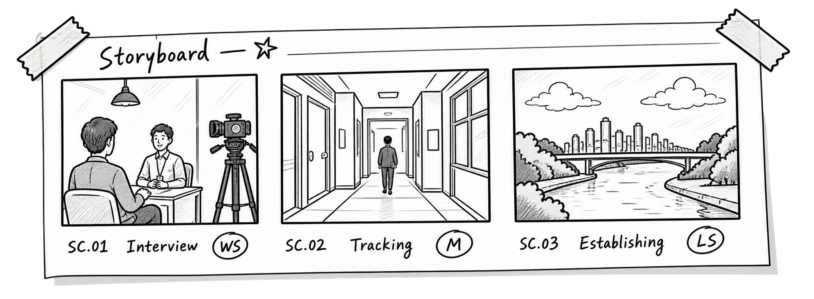

30秒新能源电动车广告
用于演示从脚本导入、剧本分析、分镜确认到生成分镜图的最终流程。
Storyboard Lab
AI PRE-PRODUCTION WORKSPACE帮助你快速拆解分镜脚本。
© 2026 STORYBOARD LAB，保留所有权利。
专注分镜创作，让想象更清晰。
Storyboard Lab
Storyboard Workspace
面向脚本导入、镜头分析、分镜确认与参考图输出的一体化创作流程。

Project Board
用于演示从脚本导入、剧本分析、分镜确认到生成分镜图的最终流程。
先填写项目类型、时长、画幅、风格和目标平台，再导入脚本。
New Project
Script Import
支持 TXT/MD/CSV/DOCX/XLSX/文本型 PDF；旧版 DOC/XLS 请另存为新版格式后上传。
Script Analysis
人物、场景、道具、产品可能有多个；台词和旁白可决定是否带入分镜。
Storyboard Review
拆解分镜后会根据脚本、项目类型、创作要求和创意强度自动刷新推荐。
色调只描述色相、饱和度、明暗和冷暖关系，不写“高级”“舒服”等空泛词。
整体风格和整体色调只约束写实版真实生图；线稿和火柴人仍按草图逻辑生成。
Storyboard Frames
Export Files
导出当前项目的项目信息、剧本分析、分镜确认表和分镜图生成记录。API Key 不会写入导出文件。